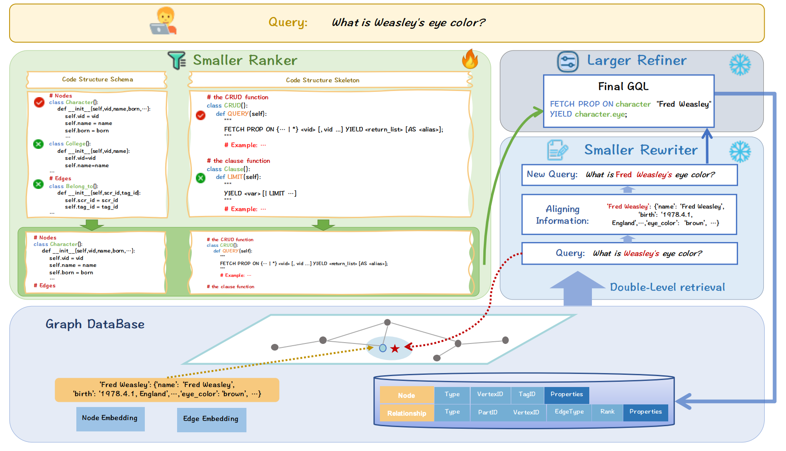
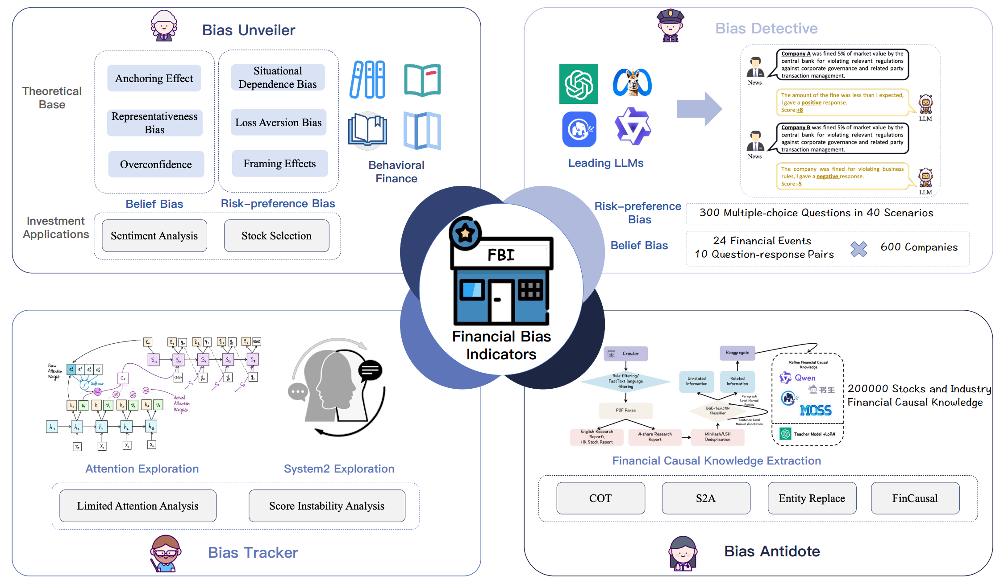
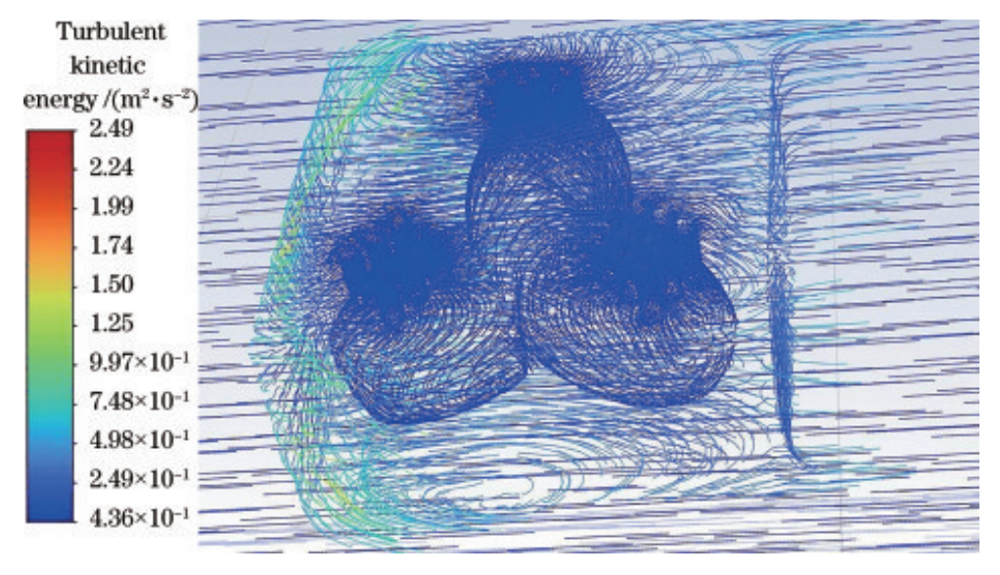

|
Yuhang Zhou I'm a First-year Ph.D. candidate at the School of Computer Science and Technology, Fudan University, Shanghai, China. I am also conducting research at the Institute of FinTech at Fudan University and Shanghai Innovation Institute. I am advised by Prof. Guangnan Ye at YesLab, also received guidance from Prof. Yixin Cao and Prof. Xipeng Qiu. Previously, I received my Bachelor degree from Jiangnan University in 2022, advised by Prof. Ya Guo at Key Laboratory of Advanced Control in Light Industry Processes, Ministry of Education.
|

|
Research: LLM Reasoning and Auto-Evaluation, Fintech, Embodied AII am very interested in the reasoning and auto-evaluation of large language models, aiming to enable iterative evolution of LLMs and enable comprehensive evaluation in a more automated way. At the same time, I have also done some fintech work in the past.
|
Publications |
|

|
R3-NL2GQL: A Model Coordination and Knowledge Graph Alignment Approach for NL2GQL
Yuhang Zhou, Yu He, Siyu Tian, Yuchen Ni, Zhangyue Yin, Xiang Liu, Chuanjun Ji, Sen Liu, Xipeng Qiu, Guangnan Ye, Hongfeng Chai Findings of EMNLP, 2024 (Spotlight of IJCAI 2024 Workshop) arXiv |

|
SilverSight: A Multi-Task Chinese Financial Large Language Model Based on Adaptive Semantic Space Learning
Yuhang Zhou, Zeping Li, Siyu Tian, Yuchen Ni, Sen Liu, Guangnan Ye, Hongfeng Chai CCL / Journal of Chinese Information Processing, 2024 arXiv |
|

|
Are Large Language Models Rational Investors?
Yuhang Zhou, Yuchen Ni, Zhangyue Yin, Xiang Liu, Jian Zhang, Sen Liu, Yixin Cao, Xipeng Qiu, Guangnan Ye, Hongfeng Chai Under-Review, 2024 arXiv |
|

|
Research on Improving the Performance of Tri-ellipsoid Multi component Optical Sensors
Yuhang Zhou, Yuchen Ni, Wei Ge, Ya Guo Laser & Optoelectronics Progress, 2023 arXiv |
Selected Projects |

|
ChatReport: A Financial Research Report Generation Approach Based on Internet of Agents
Yuhang Zhou, Hongjie Xia, Yunhui Gan, Yuchen Ni, Siyu Tian, Jiahui Zhang, Yu Liu, Guangnan Ye Using multi-agent collaboration technology based on LLMs to complete the writing of financial multimodal long texts (such as financial research reports, bond applications, etc.), using a combination of large and small models to extract causal relationships from past research report data, simulating multi role interactions to form a document writing team, and achieving low-cost, long text financial document writing. The project has been implemented and applied in companies such as Guotai Junan Securities, DataGrand, and Baidu. National First Prize, the Graduate Financial Technology Innovation Competition, 2023 Top 10 Excellence Awards, the 2024 LLM Financial Application Innovation and Practice Competition, 2024 |
Internship |
|
Invited Talks |
|
Selected Awards |
|
| 🐶 💖 🤖 |